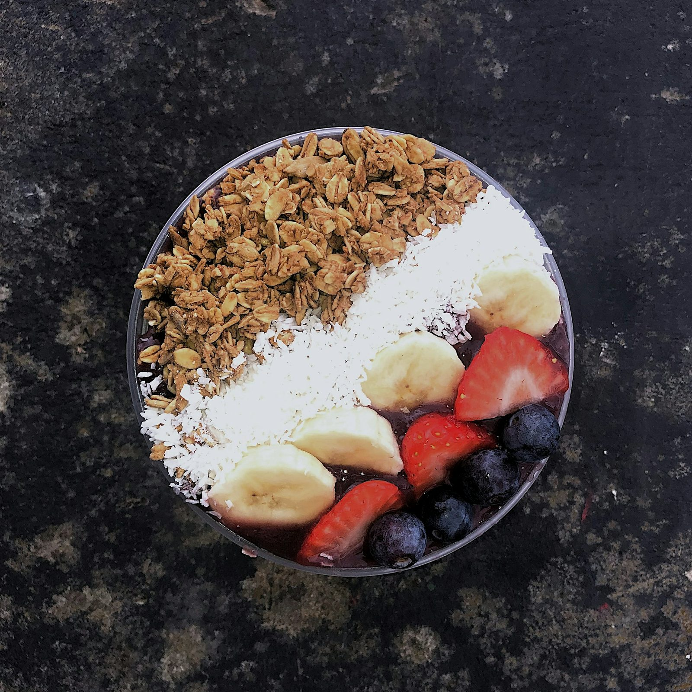
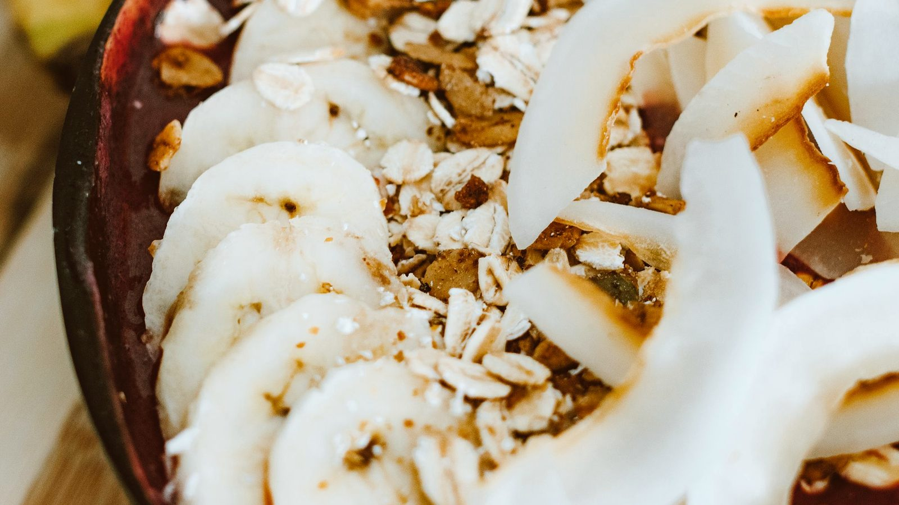
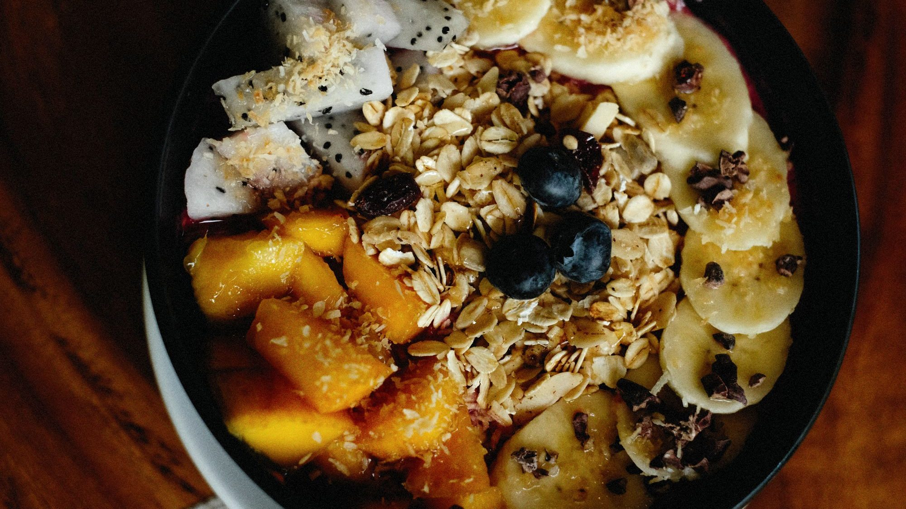
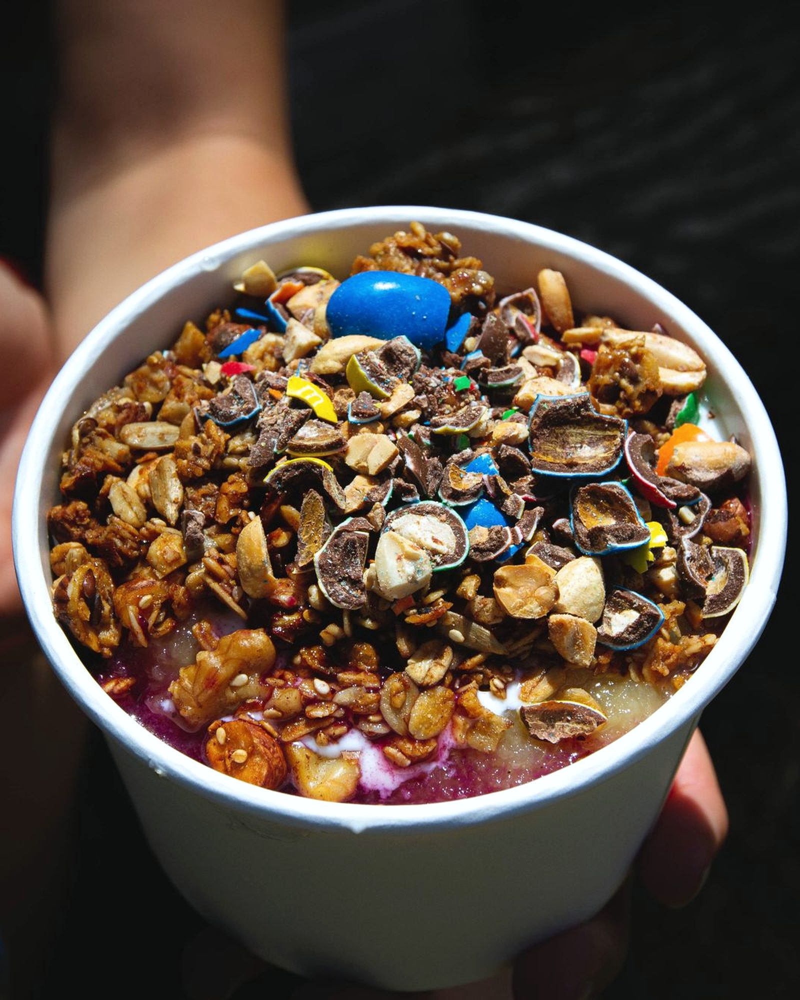
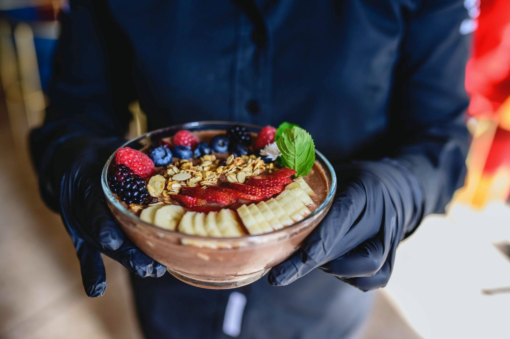

i甘いもの、我慢していませんか。
ii我慢するんじゃなく、選ぶものを変えればいい。
iii元刑務官と、その右腕が、福岡で0からつくる店。
iv完成までのリアルを、LINEで先に。
Nº 01 — For you
「身体づくりはしたい。でも甘いものも食べたい。」
そう思ったことがある人のための、アサイーボウルの店です。
Nº 02 — Story
約10年、刑務官として働いたあと、未経験からパーソナルジムを立ち上げました。今は鹿児島で、パーソナルジムとフィットネスジムを運営しています。
たくさんの方の身体づくりに関わる中で感じたのは、「身体を変えるために、好きなものを全部我慢する必要はない」ということ。食べることも楽しみながら、身体づくりを続けられる選択肢を増やしたくて、このお店をつくることにしました。
今回は福岡。右腕と2人で、知らない土地で0からお店をつくります。成功するかは分からないからこそ、完成までの過程を全部見せていきます。
CHaNZe AÇAÍ 代表まさと
Nº 03 — Craft
ただ映えるだけのアサイーボウルではなく、身体づくりをしている人にも選ばれる一杯を。妥協せず、試作を重ねています。
Nº 04 — Menu
Nº 05 — Road to open
Nº 06 — LINE
商品開発も、物件探しも、失敗も成功も。完成までのリアルを、LINEでお届けします。
Nº 07 — Q&A